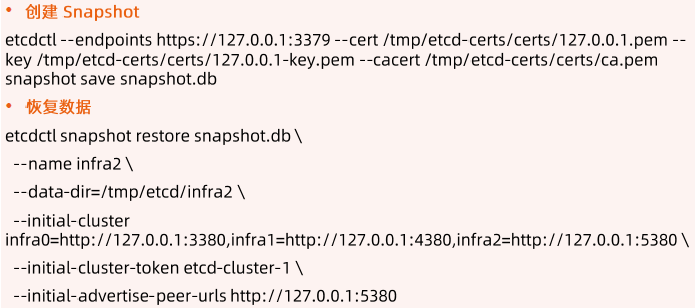
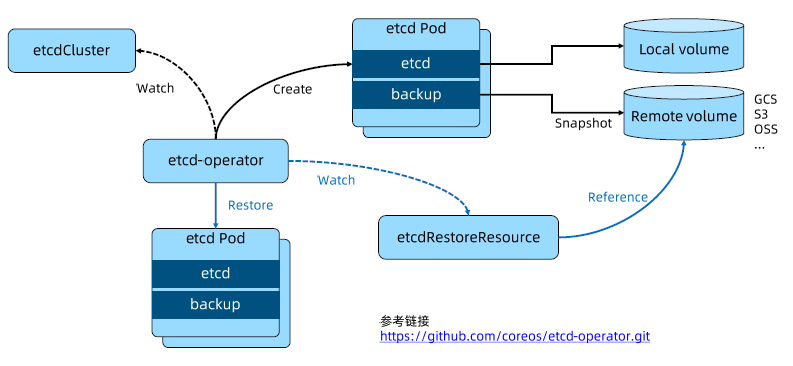
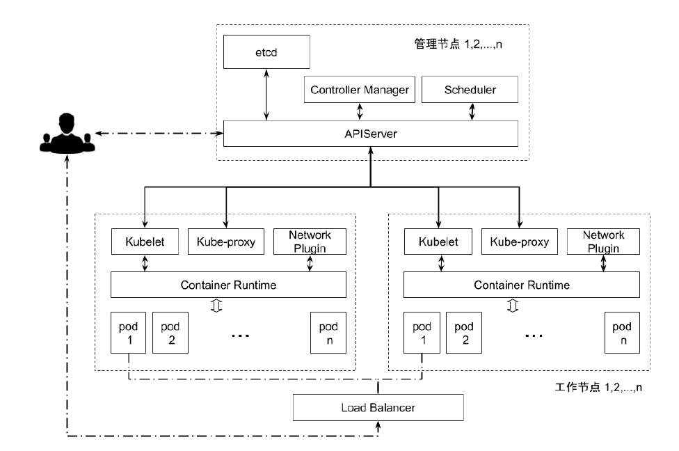
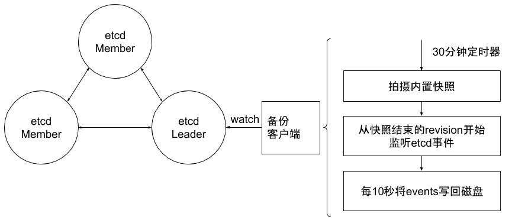

高可用集群管理
Etcd 成员重要参数
--name 'default' Human-readable name for this member
--data-dir '${name}.etcd' Path to the data directory
--listen-peer-urls 'http://localhost:2380' List of URLs to listen on for peer traffic
--listen-client-urls 'http://localhost:2379' List of URLs to listen on for client traffic
Etcd 集群重要参数
--initial-advertise-peer-urls 'http://localhost:2380' List of this member's peer URLs to advertise to the rest of the cluster.
--initial-cluster'default=http://localhost:2380Initial cluster configuration for bootstrapping.
--initial-cluster-state 'new' Initial cluster state ('new' or 'existing').
--initial-cluster-token 'etcd-cluster'Initial cluster token for the etcd cluster during bootstrap.
--advertise-client-urls'http://localhost:2379'List of this member's client URLs to advertise to the public.
Etcd 安全相关参数
--cert-file Path to the client server TLs cert file.
--key-file Path to the client server TLs key file.
--client-crl-file Path to the client certificate revocation list file.
--trusted-ca-file Path to the client server TLS trusted CA cert file.
--peer-cert-file Path to the peer server TLS cert file.
--peer-key-file Path to the peer server TLs key file.
--peer-trusted-ca-file Path to the peer server TLS trusted CA file.
灾备
举个例子：Calico 会保存所有的ip分配信息，如果etcd数据丢失，可能会导致IP重复分配。
- 创建 Snapshot
- 恢复数据

容量管理
单个对象不建议超过 1.5M
默认容量2G
不建议超过8G
Alarm & Disarm Alarm
- 设置 etcd 存储大小
etcd --quota-backend-bytes=$((16*1024*1024))
- 写爆磁盘
while [1];do dd if=/dev/urandom bs=1024count=1024 | ETCDCTL_API=3 etcdctl put key || break;done
- 查看 endpoint 状态
$ ETCDCTL_API=3 etcdctl --write-out=table endpoint status
http://localhost:2379, c9ac9fc89eae9cf7, 3.4.3, 609MB, false, false, 67174, 666392422, 666392422, memberID:xxxxxxx alarm:NOSPACE
- 查看 alarm
ETCDCTL_API=3 etcdctl alarm list
- 清理碎片
ETCDCTL_API=3 etcdctl defrag
- 清理 alarm
$ ETCDCTL_API=3 etcdctl alarm disarm
memberID:xxxxxxx alarm:NOSPACE
碎片整理
# keep one hour of history
$ etcd --auto-compaction-retention=1
# compact up to revision 3
$ etcdctl compact 3
$ etcdctl defrag
Finished defragmenting etcd member[27.0.0.1:2379]
练习
- 本地构建一个单节点的基于HTTPS的etcd 集群
- 写一条数据
- 查看数据细节
- 删除数据
高可用 etcd 解决方案
etcd-operator：coreos 开源的，基于 Kubernetes CRD 完成 etcd 集群配置。
- Archived(已归档)：https://github.com/coreos/etcd-operator
- 定义 CRD，并为CRD编写 Controller的模式就是operator

Etcd statefulset Helm Chart：Bitnami（powered by vmware）
- https://bitnami.com/stack/etcd/helm
- https://github.com/bitnami/charts/blob/master/bitnami/etcd
基于 Bitnami 安装 etcd 高可用集群
-
安装 Helm
- https://github.com/helm/helm/releases
-
通过 helm 安装 etcd
- Helm repo add bitnami https://charts.bitnami.com/bitnami
- Helm install my-release bitnami/etcd
-
通过客户端与 server 交互
- Kubectl run my-release-etcd-client --restart='Never' --image=docker.io/bitnami/etcd:3.5.0-debian-10-r94 --env ROOT_PASSWORD=$(kubectl get secret --namespace default my-release-etcd -o jsonpath="{.data.etcd-root-password}" | base64 --decode}) --env ETCDCTL_ENDPOINTS=""my-release-etcd.default.svc.cluster.local:2379" --namespace default --command --sleep infinity
Kubernetes 如何使用 etcd
Etcd 是 Kubernetes 的后端存储
对于每一个 Kubernetes Object，都有对应的 storag.go 负责对象的存储操作
- pkg/registry/core/pod/storage/storage.go
API Server 启动脚本中指定 ertcd servers 集群
spec:
containers:
- command:
- kube-apiserver
- --advertise-address=11.13.242.28
- --enable-bootstrap-token-auth=true
- --etcd-cafile=/etc/kubernetes/pki/etcd/ca.crt
- --etcd-certfile=/etc/kubernetes/pki/etcd/apiserver-etcd-client.crt
- --etcd-keyfile=/etc/kubernetes/pki/etcd/apiserver-etcd-client.key
- --etcd-servers=https://11.13.242.28:23799,https://11.13.242.29:23799,https://11.13.242.30:23799
volumeMounts:
- mountPath: /etc/kubernetes/pki
name: k8s-certs
readOnly: true
volumes:
- hostPath:
path: /etc/kubernetes/pki
type: DirectoryOrCreate
name: k8s-crets
早期 API Server 对 etcd 做简单的 Ping check，现在已经改为真实的 etcd api call。
Kubernetes 对象在 etcd 中的存储路径
Kubectl exec -it etcd-cadmin sh
ETCDCTL_API=3
alias ectl='etcdctl--endpoints https://127.0.0.1:2379\
--cacert/etc/kubernetes/pki/etcd/ca.crt\
--cert /etc/kubernetes/pki/etcd/server.crt
--key /etc/kubernetes/pki/etcd/server.key'
etcdctl get --prefix --keys-only /
/registry/namespaces/calico-apiserver
/registry/networkpolicies/calico-apiserver/allow-apiserver
/registry/operator.tigera.io/tigerastatuses/apiserver
/registry/pods/calico-apiserver/calico-apiserver-77dffffcdf-g2tcx
/registry/pods/default/toolbox-68f79dd5f8-4664n
etcdctl get --prefix --keys-only /namespaces
/namespaces/default
/namespaces/kube-system
/namespaces/dev
Etcd 在集群中所处的位置

实践：etcd集群高可用
多少个 peer 最合适？
-
1？3？5？
- 1个性能最高，但是没有数据安全性；
- 3个有冗余，对运维要求高（坏1个要及时恢复）；
- 5个性能最差，但是冗余性最高。
-
保证高可用是首要目标
-
所有写操作都要经过 leader
-
peer多了是否能提升集群并读操作的并发能力？
- Apiserver 的配置只连本地的 etcd peer
- Apiserver 的配置指定所有 etcd peer，但只有当前连接的 etcd member 异常，apiserver才会换目标
-
需要动态 flux up 吗？
-
安全性
-
Peer 和peer 之间的通讯加密
- TLS 的额外开销
- 运营复杂度增加
-
数据加密
- 是否有需求
- Kuberentes 提供了对 secret 的加密
- https://kubernetes.io/docs/tasks/administer-cluster/encrypt-data/
-
-
事件分离
-
对于大规模集群，大量的事件会对 etcd 造成压力
-
APIserver启动脚本中指定 etcd servers 集群
- /usr/local/bin/kube-apiserver --etcd servers=https://localhost:4001 --etcdcafile=/etc/ssVkubernetes/ca.crt--storage-backend=etcd3 --etcd-servers-overrides=/events#https://localhost:4002
-
-
减少网络延迟
-
数据中心内的 RTT 大概是数毫秒，国内的典型 RTT约为50ms，两大洲之间的 RTT 可能慢至400ms。因此建议 etcd 集群尽量同地域部署，
-
当客户端到 Leader的并发连接数量过多，可能会导致其他 Follower 节点发往 Leader的请求因为网络拥塞而被延迟处理。在 Follower节点上，可能会看到这样的错误:
- dropped MsgProp to 247ae21ff9436b2d since streamMsg's sending buffer is full
-
可以在节点上通过流量控制工具(Traffic Control)提高 etcd 成员之间发送数据的优先级来避免。
-
-
减少磁盘1/0 延迟
- 对于磁盘延迟，典型的旋转磁盘写延迟约为10毫秒。对于5SD(Solid state Drives，固态硬盘延迟通常低于1毫秒。HDD(Hard Disk Drive，硬盘驱动器)或者网盘在大量数据读写操作的情况下延时会不稳定。因此强烈建议使用 SSD。
- 同时为了降低其他应用程序的!0 操作对etcd 的干扰，建议将 etcd 的数据存放在单独的磁盘内也可以将不同类型的对象存储在不同的若干个 etcd 集群中，比如将频繁变更的 event对象从主etcd 集群中分离出来，以保证主集群的高性能。在 APIServer处这是可以通过参数配置的。这些etcd 集群最好也分别能有一块单独的存储磁盘，
- 如果不可避免地，etcd 和其他的业务共享存储磁盘，那么就需要通过下面ionice 命令对 etcd 服务设置更高的磁盘1/0 优先级，尽可能避免其他进程的影响。
- $ ionice -c2 -n0 -p 'pgrep etcd'
-
保持合理的日志文件大小
- etcd 以日志的形式保存数据，无论是数据创建还是修改，它都将操作追加到日志文件，因此日志文件大小会随着数据修改次数而线性增长。
- 当 Kubernetes集群规模较大时，其对 etcd集群中的数据更改也会很频繁，集群日记文件会迅速增长。
- 为了有效降低日志文件大小，etcd会以固定周期创建快照保存系统的当前状态，并移除旧日志文件。另外当修改次数累积到一定的数量(默认是10000，通过参数“--snapshot-count”指定)，etcd也会创建快照文件，
- 如果 etcd 的内存使用和磁盘使用过高，可以先分析是否数据写入频度过大导致快照频度过高，确认后可通过调低快照触发的阈值来降低其对内存和磁盘的使用。
-
设置合理的存储配额
- 存储空间的配额用于控制 etcd 数据空间的大小。
- 合理的存储配额可保证集群操作的可靠性。
- 如果没有存储配额，也就是 etcd 可以利用整个磁盘空间，etcd 的性能会因为存储空间的持续增长而严重下降，甚至有耗完集群磁盘空间导致不可预测集群行为的风险。
- 如果设置的存储配额太小，一旦其中一个节点的后台数据库的存储空间超出了存储配额，etcd 就会触发集群范围的告警，并将集群置于只接受读和删除请求的维护模式。
- 只有在释放足够的空间、消除后端数据库的碎片和清除存储配额告警之后，集群才能恢复正常操作。
-
自动压缩历史版本
- etcd 会为每个键都保存了历史版本。
- 为了避免出现性能问题或存储空间消耗完导致写不进去的问题，这些历史版本需要进行周期性地压缩压缩历史版本就是丢弃该键给定版本之前的所有信息，节省出来的空间可以用于后续的写操作。
- etcd 支持自动压缩历史版本。在启动参数中指定参数“--auto-compaction”，其值以小时为单位。也就是 etcd 会自动压缩该值设置的时间窗口之前的历史版本。
-
定期消除碎片化
- 压缩历史版本，相当于离散地抹去etcd 存储空间某些数据，etcd存储空间中将会出现碎片。这些碎片无法被后台存储使用，却仍占据节点的存储空间。因此定期消除存储碎片，将释放碎片化的存储空间，重新调整整个存储空间。
-
优化运行参数
- 当网络延迟和磁盘延迟固定的情况下，可以优化etcd 运行参数来提升集群的工作效率。etcd 基于 Raft协议进行 Leader 选举，当 Leader选定以后才能开始数据读写操作，因此频繁的Leader选举会导致数据读写性能显著降低。可以通过调整心跳周期(HeatbeatInterval)和选举超时时间(Election Timeout)，来降低Leader选举的可能性。
- 心跳周期是控制 Leader 以何种频度向 Follower 发起心跳通知。心跳通知除表明 Leader 活跃状态之外，还带有待写入数据信息，Follower依据心跳信息进行数据写入，默认心跳周期是100ms。
- 选举超时时间定义了当 Follower 多久没有收到 Leader心跳，则重新发起选举，该参数的默认设置是1000ms。
-
Etcd 备份存储
- etcd 的默认工作目录下会生成两个子目录:wal和snap。wal是用于存放预写式日志，其最大的作用是记录整个数据变化的全部历程。所有数据的修改在提交前，都要先写入 wal中。
- snap是用于存放快照数据。为防止wal文件过多，etcd 会定期(当wal中数据超过10000条记录时，由参数“--snapshot-count”设置)创建快照。当快照生成后，wal中数据就可以被删除
- 如果数据遭到破坏或错误修改需要回滚到之前某个状态时，方法就有两个:一是从快照中恢复数据主体，但是未被拍入快照的数据会丢失;二是执行所有 wal中记录的修改操作，从最原始的数据恢复到数据损坏之前的状态，但恢复的时间较长。
-
备份方案实践
- 官方推荐 etcd 集群的备份方式是定期创建快照。
- 根据集群对 etcd 备份粒度的要求，可适当调节备份的周期。在生产环境中实测，拍摄快照通常会影响集群当时的性能，因此不建议频繁创建快照。
- 但是备份周期太长，就可能导致大量数据的丢失
- 这里可以使用增量备份的方式。
